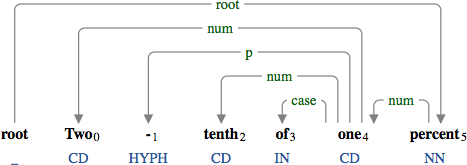
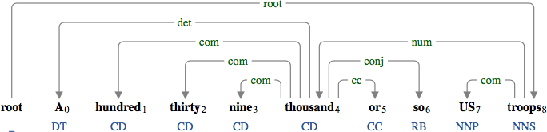

num
: numeric modifier
A
numeric modifier
(
num
) is a group of numbers, ordinals, and cardinals.

"Two" and "tenth" modify "one", which modifies the noun "percent".

The quantifier phrase "139,000 or so" modifies the noun phrase "US troops".